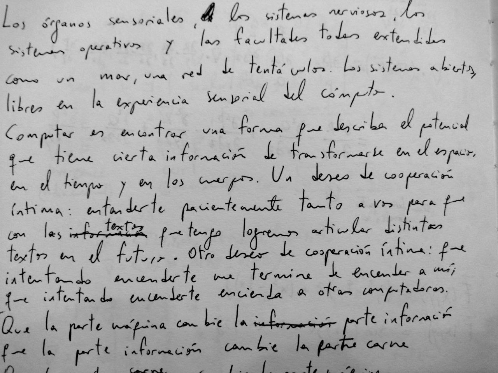
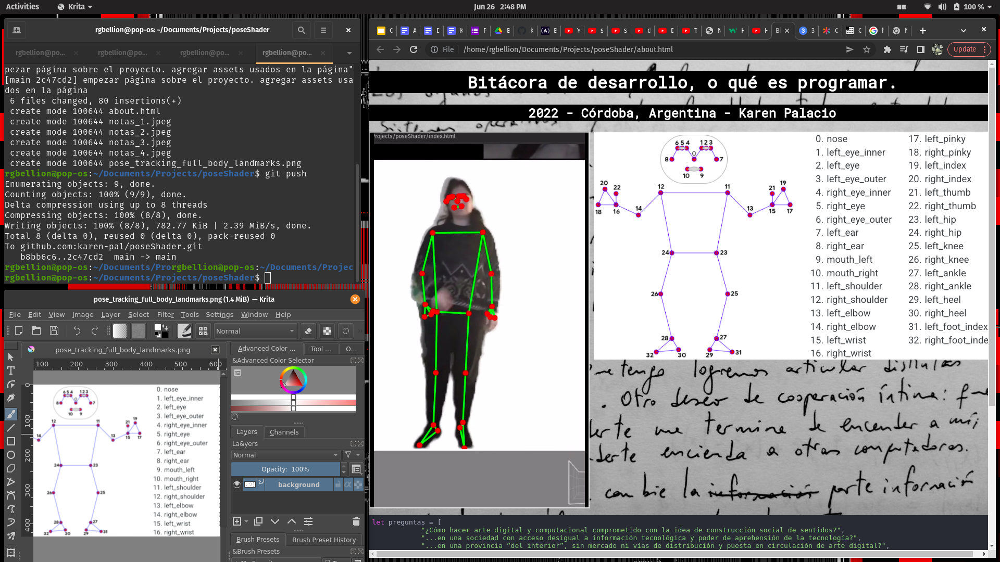

Instalación interactiva de un sistema que a través de reconocimiento de gestos controla gráficos sintetizados en tiempo real. A la par se muestran videos y notas de desarrollo que hablan sobre los procesos, estudios y las tomas de decisiones ocultas detrás del software. Se puede interactuar con el software en distintos puntos de desarrollo.
Registros


let preguntas = [
"¿Cómo hacer arte digital y computacional comprometido con la idea de construcción social de sentidos?",
"...en una sociedad con acceso desigual a información tecnológica y poder de aprehensión de la tecnología?",
"...en una provincia “del interior”, sin mercado ni vías de distribución y puesta en circulación de arte digital?",
"...siendo mujer en tecnología, donde la brecha tecnológica aumenta?",
]
let delArte = [
"¿Cómo hacer arte digital y computacional abierto y movilizante, que hable nuestros lenguajes y que trate nuestros temas?",
"¿Cuáles son nuestros lenguajes? ¿Cuáles son nuestros temas? ¿Qué hay más allá de las desigualdades y brechas?",
"Producir arte digital ¿Como acto comunicativo (¿entre quiénes?)? ¿Como acto de denuncia (¿de qué y ante quién?)?",
"Producir arte digital ¿Como acto de proposición de signos producidos con intención (¿qué intención?)? ¿Como código a descifrar (¿para qué?)?",
"Producir arte digital ¿Como resultado de procesos sociales de relacionarse desde el cuerpo y mente con conceptos, ideas, normativas (¿de qué cuerpos, de qué mentes?)? ¿Como artefacto que posibilite la comunicación y la formación de saberes colectivos (¿de qué grupos?)?",
"Ante la falta de espacios con continuidad que posibilite experimentación real artística en Córdoba, ¿cómo poner en circulación algo que proponga?",
]